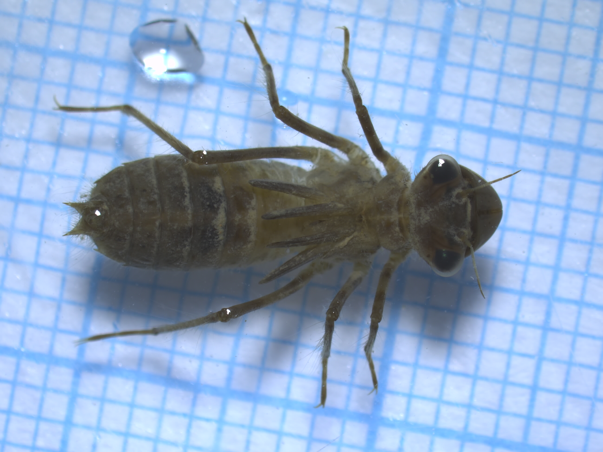
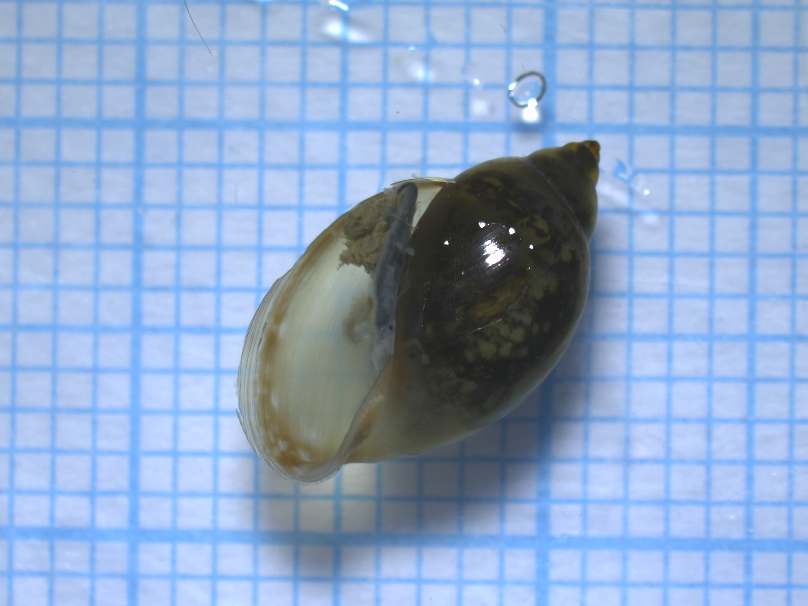
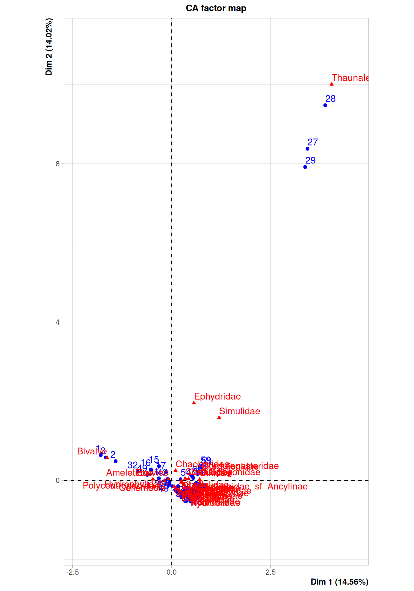
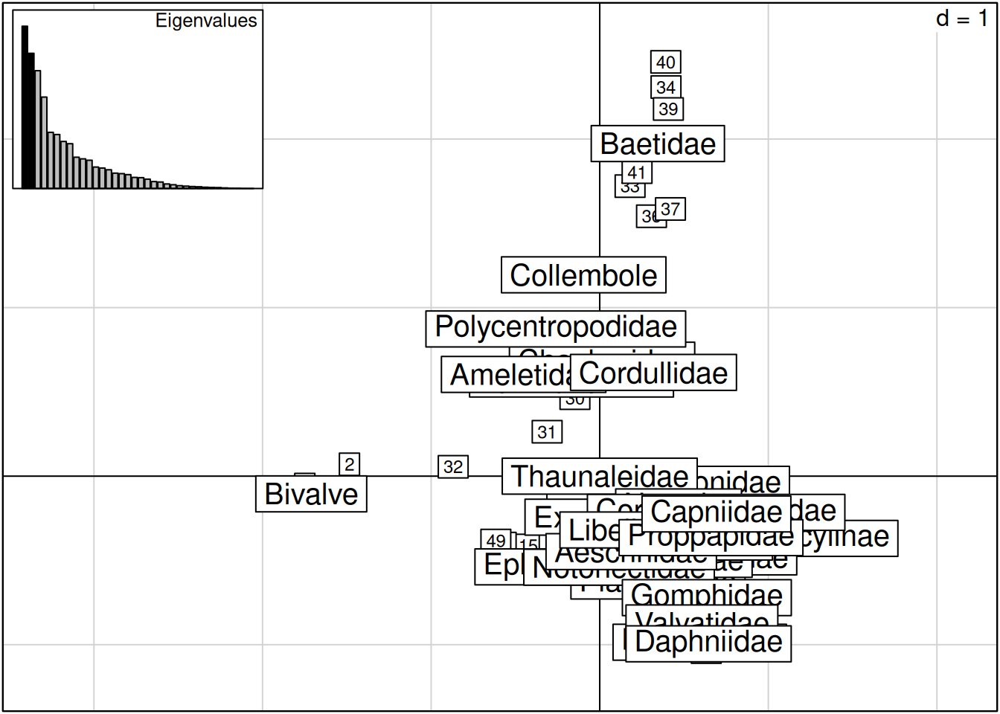
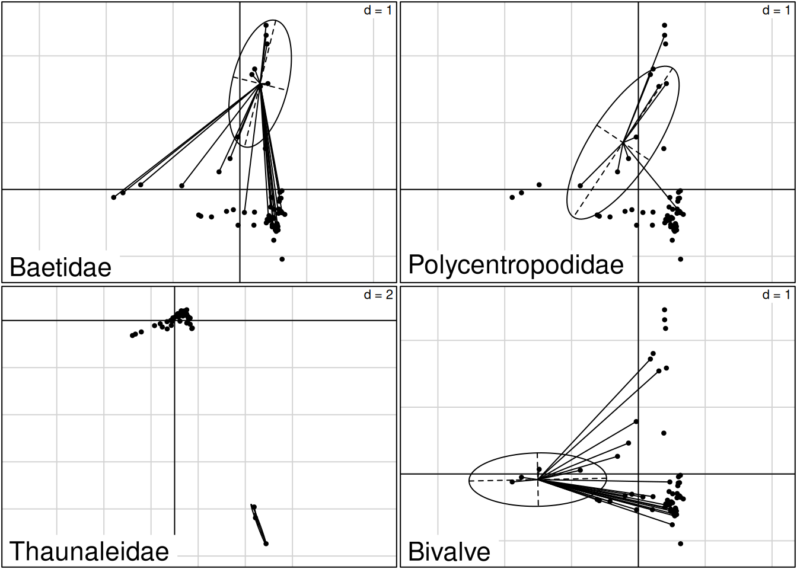

A Correspondence Analysis (CA), or Analyse Factorielle de Correspondance (AFC) in French, is a multivariate statistical method used to measure the distance between different profiles in your data, or the discrepancy between the data and the chi-square \(\chi²\) independence hypothesis. This hypothesis (also called the null hypothesis H0) implies that the 2 variables studied are independent.
The values can be quantitative, qualitative or semi-qualitative. It is usually applied to contingency tables or when you have a table with data about species abundance in different places and another one with data about the ecology of those same places.
Just like in the PCA, we will be looking at the orthogonal axes that maximize the inertia. The parameter used is the \(\chi²\) distance : this distance is calculated between 2 rows or 2 columns. The CA gives a weight to each profile, proportional to the abundance of the profile.
The columns and lines have a symmetrical role, so you’ll have the same results in both directions.
To use it you’ll need to pay attention to certain things :
- all values need to be positive (which shouldn’t be a problem if it’s a contingency table),
- if you have rare species, it may change the shape of your results significantly. It’s not always a bad thing, just something you need to be aware of.
Two R packages can be used to perform CA : ade4 (Dray and Dufour (2007)) and FactoMineR (Lê, Josse, and Husson (2008)).
Ecological exemple
Ecological context
A study was conducted in 2022 on the permanent wetlands of the municipality of Grabels (34), as part of a Municipal Biodiversity Atlas (GEB (2023)). The aim was to characterize the state of these environments using bioindicator species : benthic macroinvertebrates (Figure 1). This taxon, which is sensitive to pollution, can be used to study water quality.
Imports

(a) Libellulidae

(b) Physidae
Figure 1: Example of two families of benthic macroinvertebrates
In this study, the standardised I2M2 protocol of the Water Framework Directive (European Parliament (2014)) was adapted to a context of ponds and very shallow watercourses.
Two streams (the Rieu Querelle and the Verdanson), permanent ponds (Ruche, Terrain de Foot and Foot2) and an artificial water source (Bassin) were sampled and the macroinvertebrates collected were identified. Each wetland was sampled at several randomly selected points (Zi), and three replicas were made at each point (Zi_j).
The purpose of this analysis is to study the species assemblages depending of the site. In this context, the CA is one of the right choices.
Packages
Code
rm(list =ls())requiredPackages <-c("dplyr","readr", "stringi", "ggplot2", "vegan", "tidyr", "gridtext", "ggtext")for(package in requiredPackages){ #Installs packages if not yet installedif(!requireNamespace(package, quietly =TRUE))install.packages(package)}library(dplyr)library(readr)library(stringi)library(FactoMineR)library(ade4)library(ggplot2)library(vegan)library(tidyr)library(factoextra)library(gridtext)library(ggtext)library(knitr)
In each sample (each row), macroinvertebrates have been identified at the family level (Table 1), and the CA analysis will be performed at the taxonomic level.
Code
kable(head(macroinv[,1:10]), "html")
Table 1: Overview of the dataset
Echantillon
ZH
Acariforme_hydracarien
Niphargidae
Triops
Gammaridae
Astacidae
Atyidae
Asellidae
Cambaridae
Z1_1
Ruche
0
0
1
0
0
0
0
0
Z1_2
Ruche
0
0
6
0
0
0
0
0
Z1_3
Ruche
0
0
0
0
0
0
0
0
Z1_1
Terrain_foot
0
0
13
0
0
0
4
0
Z1_2
Terrain_foot
0
0
4
0
0
0
5
0
Z1_3
Terrain_foot
0
0
2
0
0
0
2
0
However, the taxonomic level of the order was also taken in most cases (Coleoptera, Odonata, etc.) in order to be able to group together the numerous identified families and allow an ecological interpretation (Table 2). Other families were grouped at the class level (Bivalves, Gastropods, etc.) and the paraphyletic group of Crustaceans was kept.
Table 2: Correspondence between taxonomic levels of macroinvertebrates families and orders
Order
Family
X1
Arachnides
Acariformehydracarien
X2
Crustaces
Niphargidae
X3
Crustaces_branchiop
Triops
X4
Crustaces_amphipod
Gammaridae
X5
Crustaces_decapod
Astacidae
X6
Crustaces_decapod
Atyidae
Remove species absent from the sampling
Species absent from all surveys (empty columns) or present in only one sample were removed to prevent double absences from impacting the analysis.
Code
#check each specie countspecies_sum <-colSums(macroinv[,-c(1,2)])#keep only names of species with <1 occurencesspecies_keep <-names(species_sum[species_sum >1])#create reduced dataframemacroinv_red <- macroinv[, c(names(macroinv)[1:2], species_keep)]
A different number of samples was taken in each wetland (see Figure 2), depending on their size. For small wetlands (less than 20m²), such as Ruche or Foot2, it was decided to adjust the number of sampling points in order to limit the ecological impact on these environments. For watercourses such as the Rieu Querelle and the Verdanson, sampling points were distributed to cover the upstream-downstream gradient, with different habitats present.
Some taxa are present in large quantities (e.g., Bivalves in Ruche).
Some orders are very generalist and present in all wetlands (e.g., Diptera, Gastropoda, Bivalvia). Odonata are also represented in all sites, except in the Bassin. Other orders have more specific ecological preferences and are more sensitive to pollution, such as Trichoptera and Plecoptera. The low representation of the latter could be explained by their ecological preference for rocks in streams rather than ponds.
Analysis : Correspondance Analysis
CA with FactoMineR
Code
#First CA with the reduced data setCA <-CA(macroinv_red[,-c(1,2)], axes =c(1,2))#plot(CA$eig[,2], type = "h")

Figure 4: CA with the FactoMineR package
Here we can see our first CA (Figure 4) using the FactoMineR package. The first two axes are displayed. These are the ones that explain the most inertia in the data set, 14,56% and 14,02 as we can see in the parenthesis.
The position of the families and sites on the graph indicate how similar they are to each other and how the affect the axis. The more close together they are the more similar they are according to the axes displayed. If they are very far away from the center, they play a bigger role in the contribution to the axis.
CA allows to see species and sites contribution to the main axis (Table 3, Figure 5). Here we only show the species contribution and which ones contribute significantly.
Code
#Selection of the species that contribute significantly to axes one and twowhich_contrib_high1 <-which(CA$col$contrib[,1] >=100/nrow(CA$col$contrib))which_contrib_high2 <-which(CA$col$contrib[,2] >=100/nrow(CA$col$contrib))kable(CA$col$contrib[which_contrib_high1, ], "html")kable(CA$col$contrib[which_contrib_high2, ], "html")
Table 3: Species that contribute significantly to Axis 1-2
(a) Species that contribute significantly to axe 1
Dim 1
Dim 2
Dim 3
Dim 4
Dim 5
Asellidae
3.680245
0.0953079
0.0754097
28.3995886
5.2119085
Bivalve
68.867884
8.7892169
0.3125365
0.0920696
0.0793127
Thaunaleidae
12.359512
78.6994068
0.2334673
3.0135863
0.1551988
Culicidae
5.331786
2.5103813
9.2840921
1.7645808
30.1538840
(b) Species that contribute significantly to axe 2
Dim 1
Dim 2
Dim 3
Dim 4
Dim 5
Bivalve
68.867884
8.789217
0.3125365
0.0920696
0.0793127
Simulidae
1.958174
3.539633
0.0035563
4.4930038
1.4898874
Thaunaleidae
12.359512
78.699407
0.2334673
3.0135863
0.1551988
To check if they contribute significantly to the axis we look at their contribution. If it is greater than the sum of all contributions divided by the number of species we consider that the contribution is significant. Here (Table 3) we can see that four families contribute significantly to the construction of the first axis and three families for the second one. Without surprise, Thaunaleidae contributes to both of them, Bivalve also appears in both. Then Culicidae and Asellidae contribute significantly to the first axis and Simulidae to the second axis.
Here (Figure 5) is another way of presenting the contributions. The red line represents the threshold for the signicance of the contribution.
FactoMineR is not the only package that can be used for a CA. Here are a few examples of functions that can be useful in the ade4 package.
We noticed that Thaunaleidae are only present in one of the sites, a bassin, and it is dragging the CA. In this next section we will also look at the CA without the odd bassin.
CA with ade4
When using the ade4 package we need to specify nf, it defines the number of axes in the CA constructed : it is calculated by taking minimum(number of columns, number of rows) - 1 (here 38 - 1 = 37)
Figure 6: Cumulative eigenvalues associates to CA dimensions
It is interesting to look at the cumulative inertia to choose how many axis are interesting to keep. It is common to keep the first one to three or the ones that explain up to 50% of the inertia. But in ecology it can be hard to get to that percentage so it’s okay if the inertia is not that high.
Here we can see that when we remove the bassin the axis cumulatively explain more inertia (Figure 6).
The first two axes explain \(28.58%\) of the total inertia, with approximately \(14%\) for each axis (Figure 6). Although this is not a large proportion, such values are not uncommon in ecological datasets. Axis 1 represents essentially a Bivalve gradient, with Bivalve contributing \(69%\), followed by Thaumaleidae (\(12%\)), Culicidae (\(5.3%\)), and Asellidae (\(3.7%\)) (Table 3). Axis 2 is mainly explained by Thaumaleidae (\(79%\)), with smaller yet notable contributions from Bivalve (\(8.8%\)) and Simuliidae (\(3.5%\)), as we can see on Table 3.
The high contribution of Bivalve may be explained by the fact that, unlike the other taxa (at the family level), it refers to a class and therefore represents a much broader group. This could account for the prevalence of various Bivalve individuals across some sampling stations (e.g. between 62 and 700 individuals in “Ruche” samples), and consequently, its dominant role in shaping Axis 1.
The \(79%\) contribution of Thaumaleidae likely reflects its high density in three stations (“Bassin”), a peculiar environment where only Thaumaleidae were found, while they were nearly absent from other sites. This group thus stretches Axis 2. “Bassin” environnement was a cemented artificial pound which is hard to colonize for most organisms other than Thaumaleidae. Indeed, this taxon belongs to the Diptera order, very tolerant to pollution (Vivier, P. (1970)) and ubiquitous (I. (1927)).
Regarding the correspondances between stations and species, the analysis shows - as expected - a proximity between Thaumaleidae and stations 28, 27 and 29, which are the stations it was almost exclusively sampled from. It could therefore be interesting to redo the analysis without those 3 stations to remove the high correlation between these “Bassin” samples and Thaumaleidae.
Code
scatter(CA_ade4_sansbassin)

Code
#we can see things more clearly when we remove the bassin
Code
# Link samples position (CA$li = rows) on CA axis and the wetlands -------------CA_ade4_ligne_ZH <-merge(CA_ade4$li, macroinv_red$ZH, by=0)CA_ade4_sansbassin_ligne_ZH <-merge(CA_ade4_sansbassin$li, macroinv_red$ZH, by=0)# Link species position (CA$co = columns) on CA axis and the family / order ----CA_ade4_col_ZH <-data.frame(CA_ade4$co) %>%mutate("Family"=rownames(.)) %>%left_join(., classification, by =c("Family"="X2"))CA_ade4_sansbassin_col_ZH <-data.frame(CA_ade4_sansbassin$co) %>%mutate("Family"=rownames(.)) %>%left_join(., classification, by =c("Family"="X2"))
Plot CA for the lines, dim 1 and 2, colour depends on the water source type :
Figure 8: Samples position on Axis 1 and 2 of the CA, depending on wetland
To help us interpret the graph, it can be useful to colour the points depending on an ecological variable.
In Figure 8, the points correspond to the projection of the samples onto the two axes of the CA. The position of each sampling point corresponds to the barycenter (average) of the coordinates of the species present at that site. We can see that the sites coming from the same wetland are more or less grouped together meaning that the groups of families present in each of them are similar. It is not surprising because the ecological conditions are usually similar in one type of wetland.
Plot CA for the lines, dim 1 and 2, colour depends on the order :
Figure 9: Species position on Axis 1 and 2 of the CA, depending on wetland
In Figure 9, the points correspond to the projection of the families onto the two axes of the CA. The position of each family corresponds to the barycenter (average) of the coordinates of the sites where this species was present. (je crois que je comprends pas bien cette phrase)
Figure 10: Data reorganized according to the CA results
This table value shows presence and abundance, each square representing the presence of a family in a site. The square size varies with abundance of the family. On the first table (Figure 10 (a)) - which includes the 3 bassin stations - we can see that the presence profils are highly impacted by the peculiar macroinvertebrate composition of said stations.
When we get rid of these stations (Figure 10 (b)), it reveals presence patterns that couldn’t be seen. The most obvious is the bivalve presence in the first sations, which is likely due to their prevalence in “Ruche” stations. The graph also shows that the presence of Culicidae is similar in all stations. For Physidae, we observe the same tendency although they are not present on the station “Rieu_Querelle”. Some species are only present in a few, or even a single station. That is the case for Hydrobiidae which are only present in one sample, “Foot_2”. Finally, Baetidae’s presence is really high on the “Verdanson” Stations.
Species distribution
We can look at how each species is distributed on the CA in the first two axis. It can help us visualize how much influence they have on the axis.
Code
par(mfrow =c(2, 2))s.distri(CA_ade4_sansbassin$li, macroinv_red[-c(27,28,29), 26], cell =1.5, sub =colnames(macroinv_red[26]), csub =2) #rare familys.distri(CA_ade4_sansbassin$li, macroinv_red[-c(27,28,29), 36], cell =1.5, sub =colnames(macroinv_red[36]), csub =2) #rare familys.distri(CA_ade4$li, macroinv_red[, 22], cell =1.5,sub =colnames(macroinv_red[22]), csub =2) #common familys.distri(CA_ade4_sansbassin$li, macroinv_red[-c(27,28,29), 5], cell =1.5, sub =colnames(macroinv_red[5]), csub =2) #family very abundant in 1 station

Figure 11: Species distribution in samples on Axis 1 and 2 of the CA
Figure 11 shows the distribution of the different families across the sites. Each point corresponds to the coordinates of a site. The points connected to each other correspond to all the points where the family is present. Their barycenter (average of the site positions) corresponds to the position of the family on the CA projections in Figure 9.
The barycenter corresponds to the average of the sampled environmental conditions where the family is present (i.e. the central position of the ecological niche).
The size of the ellipse corresponds to the width of the ecological niche. A generalist family will tend to be present at the center of the CA with a large ellipse, while a more specialized family, present in a few site, will have a smaller ellipse (e.g., Thaunaleidae).
However, for abundance data (as here), the barycenter is attracted to sites where the family is present in greater numbers (e.g., Bivalves in Ruche).
Sites distribution
Similarly, we can project the distribution of sites. Each point corresponds to the coordinates of a family. For a given site, the families present on that site are connected, and the barycenter of these families’ coordinates form the site’s position in the CA (Figure 8)
The size of the ellipses can be interpreted as the alpha diversity (i.e., species richness) present at a site : the larger the ellipse, the more families it will contain.
Conclusion
Certain stations having very specific physico-chemical caracteristics, their macro-invertebrate composition is very peculiar and influence greatly the CA results. However, after removing them from the analysis, we can highlight macro invertebrate compositions and presence for our different stations.
References
Dray, Stéphane, and Anne–Béatrice Dufour. 2007. “The ade4 Package: Implementing the Duality Diagram for Ecologists.”Journal of Statistical Software 22 (4): 1–20. https://doi.org/10.18637/jss.v022.i04.
European Parliament. 2014. “Directive 2000/60/EC of the European Parliament and of the Council of 23 October 2000 Establishing a Framework for Community Action in the Field of Water Policy.”
GEB, Master. 2023. “Atlas de La Biodiversite Communale de Grabels.” Montpellier University.
I., A. D. 1927. “Faune de France 13: Diptères (Brachycères) (Stratiomyiidæ, Erianidæ, Cænomyiidæ, Rhagionidæ, Tabanidæ, Codidæ, Nemestrinidæ, Mydaidæ, Romoyiidæ, Therevidæ, Omphralidæ).”Nature 120 (3018): 328–28. https://doi.org/10.1038/120328a0.
Lê, Sébastien, Julie Josse, and François Husson. 2008. “FactoMineR: A Package for Multivariate Analysis.”Journal of Statistical Software 25 (1): 1–18. https://doi.org/10.18637/jss.v025.i01.
Vivier, P. 1970. “Influence de La Pollution Organique Sur La Faune Aquatique Des Eaux Courantes.”Bull. Fr. Piscic., no. 236: 89–104. https://doi.org/10.1051/kmae:1970009.